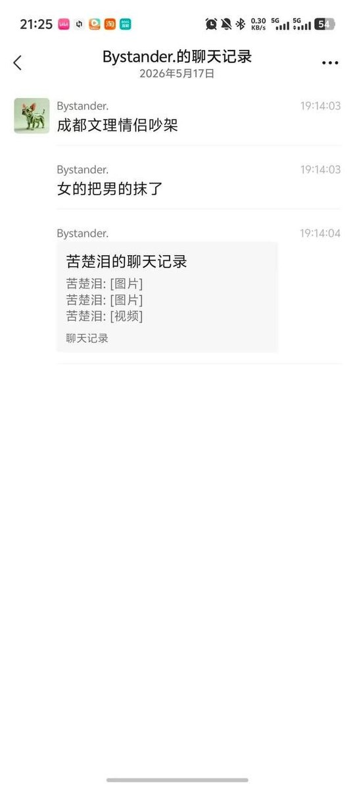
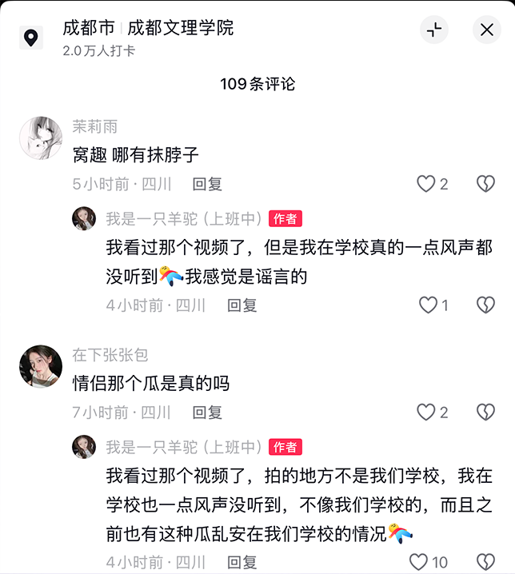

你们毁了一个萌系的女孩
@200x0x1x
@whyyoutouzhele 我求求你们…


李老师不是你老师
@whyyoutouzhele
5月17日，网传“成都文理学院情侣吵架，女的把男的抹了”
网传图片显示，房间内全是血渍，一名女子在屋内朝急救人员哭喊：“我求求你们…”
不过也有该校学生指出：“我看过那个视频了，一点风声都没听到，可能不是我们学校发生的事情” https://t.co/5Lm4rA82ld